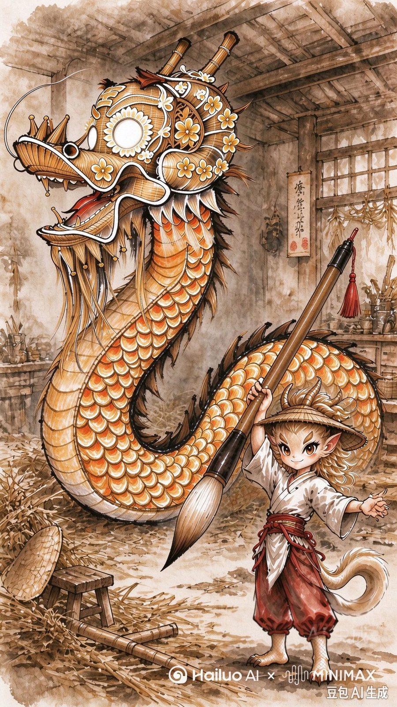
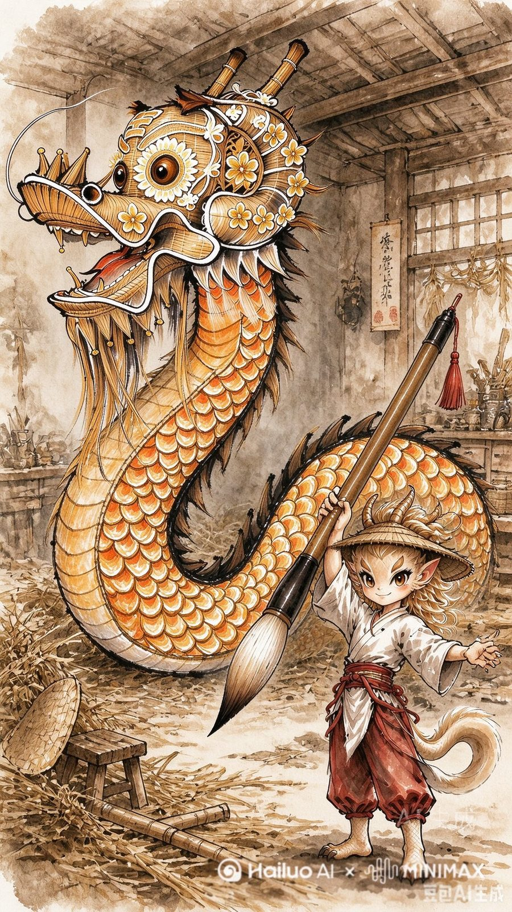
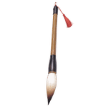

工 序 四 / 四 · 出师 — 成器
点睛
那只龙还差一笔——
点它的眼睛 · 点睛
龙的眼，还差一笔。
点它 · 点睛
笔尖落下的那一瞬，稻草有了眼睛。
湖口人说——点了睛，龙才算活。
点睛之后，龙才算活。此前是物件，此后是龙。
捌 · 睛
— 出师 · 成器 —
⌄
点睛取出毛笔 · 擦出龙的眼睛
◂ 擦到眼睛，龙才会亮 ▸
点睛既成 · 草龙方醒
点睛之后，龙才算活。
此前是物件，此后是龙。
此前是物件，此后是龙。
收 下
